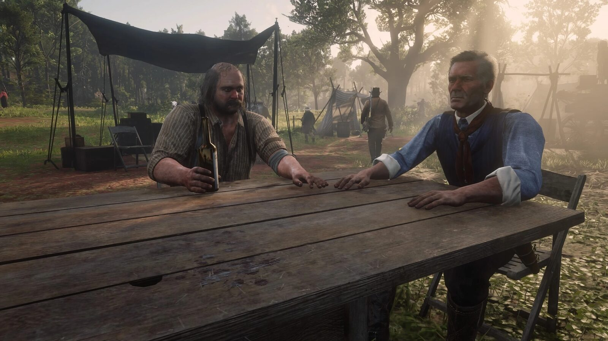
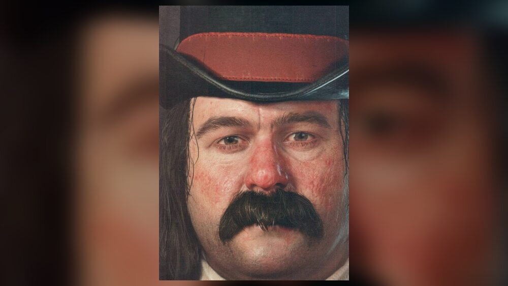
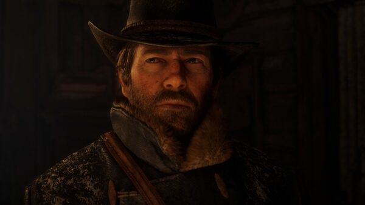
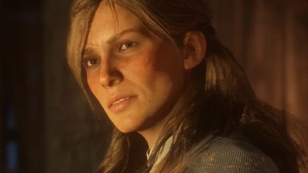
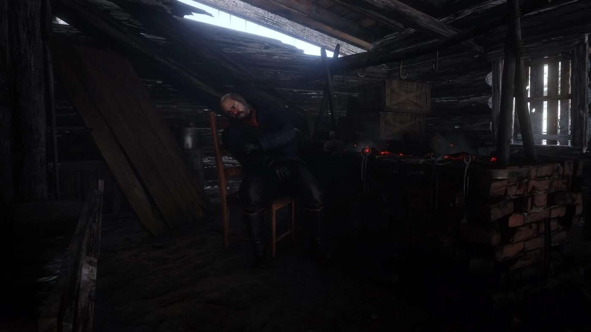

Personnage · Gang Van der Linde
Simon Pearson
Simon Pearson est le cuisinier et le boucher du gang Van der Linde dans Red Dead Redemption 2. Ancien marin de l'US Navy, il assure les vivres et l'intendance du camp.
Il quitte le gang avant sa chute et tient, en 1907, le magasin général de Rhodes.
- Affiliation
- Gang Van der Linde
- Rôle
- Cuisinier et boucher
- Passé
- US Navy
- En 1907
- Propriétaire du magasin général de Rhodes
- Voix
- Jim Santangeli
- Jeux
- Red Dead Redemption 2
Biographie
Origines
D'après le guide officiel, le père et le grand-père de Pearson chassaient le cachalot. Il comptait suivre leurs traces, mais le métier disparaissait déjà à sa sortie de l'école. Il sert brièvement dans l'US Navy, part vers l'Ouest, s'y endette, et Dutch lui propose de rejoindre le gang.
Le cuisinier du camp
Pearson installe chaque nouveau camp avec Susan Grimshaw et envoie régulièrement Arthur chercher de la viande. Grâce au registre du camp, il fabrique aussi des sacoches et des aménagements. Au chapitre 1, alors que les vivres manquent dans les montagnes, il envoie Arthur et Charles chasser le cerf, puis aide Arthur à dépecer les bêtes.
Au chapitre 3, une dispute avec Sadie Adler se conclut par une course à Rhodes, où Arthur l'emmène se ravitailler et poster une lettre de Pearson à sa tante. Au chapitre 4, Dutch le charge, avec Charles et le révérend Swanson, d'enterrer Kieran Duffy.
Le départ
À Beaver Hollow, Susan Grimshaw ordonne à Pearson et à Bill de brûler le corps de Molly O'Shea. Peu après, Pearson s'en va avec Uncle et Mary-Beth. Au début de "Our Best Selves", Dutch annonce leur départ et les traite de lâches.
1907
En 1907, Pearson est marié et tient le magasin général de Rhodes, où John Marston peut discuter avec lui.
Relations

Susan Grimshaw
Installe chaque camp avec lui.

Arthur Morgan
Ravitaille le camp en viande à sa demande.

Charles Smith
Chasse pour le camp avec Arthur au chapitre 1.

Sadie Adler
Se heurte à lui au camp au chapitre 3.
Conception et interprétation
Pearson est interprété par Jim Santangeli, acteur, scénariste et réalisateur américain, qui assure la voix et la capture de mouvement. Santangeli avait auparavant prêté sa voix à un passant dans Grand Theft Auto IV. Il a participé à une table ronde avec la distribution du jeu à la SacAnime de Sacramento, en juin 2019.
En 2026, Santangeli a indiqué lors d'un direct sur TikTok tenir un petit rôle dans Grand Theft Auto VI, selon GTA BOOM en juin 2026.
Galerie
